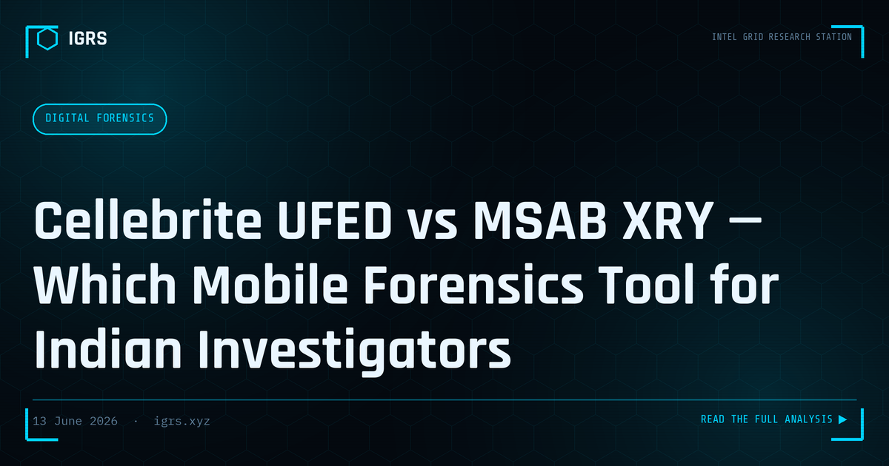

Cellebrite UFED vs MSAB XRY — Which Mobile Forensics Tool for Indian Investigators
Mobile forensics is at the heart of modern cybercrime investigation in India. Nearly every cybercrime case involves at least one mobile device — and the quality of evidence extracted depends heavily on the tool used. Cellebrite UFED and MSAB XRY are the two dominant platforms deployed across Indian law enforcement agencies, state FSLs, and corporate DFIR teams. This comparison helps investigators and procurement officers make an informed choice.
Overview
| Feature | Cellebrite UFED | MSAB XRY |
|---|---|---|
| Origin | Israel | Sweden |
| Primary Market | LE, Defence, Corporate | LE, FSL, Intelligence |
| Device Support | 35,000+ devices | 25,000+ devices |
| India Deployment | Very High — CBI, State Police, NIA | High — FSLs, CERT-In |
| Android Coverage | Excellent | Excellent |
| iPhone (latest) | Good (with Premium) | Good |
| Indian Budget Phones | Excellent (Jio, Micromax) | Good |
| Cloud Extraction | Yes (Cellebrite Cloud) | Yes (XRY Cloud) |
| Pricing | Higher | Moderate |
Extraction Types — Both Tools
- Logical extraction: App data, contacts, messages, call logs — available on most devices without bypass
- File system extraction: Full file system including deleted files — requires unlocked device or exploit
- Physical extraction: Bit-for-bit image of storage — highest evidentiary value, requires chip-off or advanced bypass
- Cloud extraction: Google, iCloud, WhatsApp, Facebook — requires credentials or legal process
Cellebrite UFED — Strengths
- Largest device database — critical for the diverse Indian Android market (Samsung, Vivo, Oppo, Realme, Jio)
- Advanced Analytics (Cellebrite PA) — AI-powered evidence linking, face recognition, timeline analysis
- Strongest community and training ecosystem in India
- UFED Touch 3 — field-deployable hardware unit for on-site extraction
- Better coverage for Indian feature phones (Jio Phone, KaiOS)
MSAB XRY — Strengths
- Superior report generation — court-ready XML reports with chain of custody built in
- XRY Legal — specifically designed for evidentiary submissions
- Better privacy compliance documentation — important for international evidence sharing
- Stronger encryption analysis capabilities
- XAMN Horizon — powerful data visualisation for large datasets
Indian Context — What Matters Most
For Indian investigations, device coverage is paramount. The Indian smartphone market is dominated by sub-₹15,000 Android devices from Chinese OEMs (Vivo, Oppo, Realme) and Samsung. Both tools handle these well, but Cellebrite's device database is marginally more comprehensive for budget Indian handsets.
For FSL environments where court admissibility is the primary concern, MSAB XRY's report format and legal documentation are often preferred by courts. Many Indian FSLs use both tools in tandem — Cellebrite for extraction, XRY for report generation.
Procurement Recommendation
| Use Case | Recommended Tool |
|---|---|
| Field investigation unit (diverse devices) | Cellebrite UFED |
| FSL / court submission focus | MSAB XRY |
| Large-scale investigation (500+ devices) | Both (Cellebrite + XRY) |
| Corporate DFIR team | Cellebrite UFED 4PC (software) |
| Budget-constrained unit | MSAB XRY (lower TCO) |
Free Alternatives for Resource-Constrained Teams
- Autopsy + Android Analyzer: Open-source, handles logical extractions well
- ADB (Android Debug Bridge): Free, requires USB debugging enabled
- MVT (Mobile Verification Toolkit): Amnesty International tool for spyware detection
Legal Basis for Extraction
Mobile device extraction requires either consent of the device owner or a court order under Section 94 BNSS (formerly Section 91 CrPC). For arrested persons, seizure under Section 94 BNSS with proper seizure memo is standard. All extractions must be documented with hash values (SHA-256) and a Section 63 BSA 2023 certificate for court admissibility.